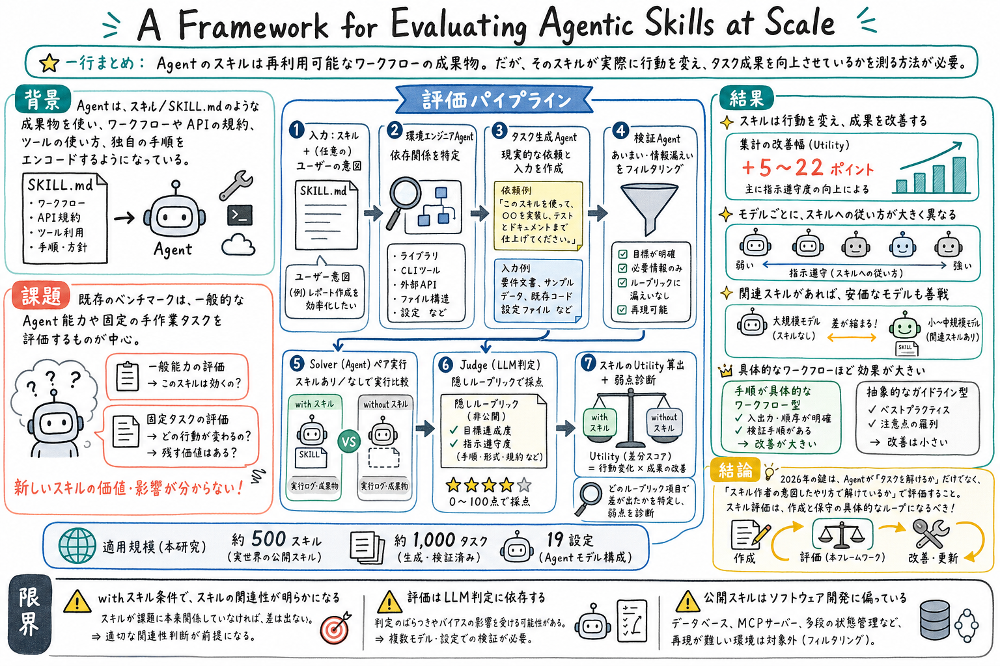

任意の skill から現実的で実行可能な評価タスクを自動合成する framework を提案している。

この論文の何がいいか
この論文の良さは、skill を「便利そうな手順書」から「測定可能な外部状態」に引き上げているところにある。skill を増やすほど context は重くなり、選択ミスや古さも増える。だから、どの skill がどの行動を変えたかを測れないと、skill registry はすぐに散らかる。
実務で大事なのは、agent がタスクを解けたかだけではない。2026 年の agent では、タスクをどの手順で、どの規約で、どの安全境界を守って解いたかが重要になる。この論文は、その「how」を rubric に落とし、with-skill / without-skill の差分として読む方法を与えている。
個人 AI assistant や coding agent の運用では、learn-from-logs、paper-watch、article-page-publisher、GitHub 作業 skill のような長い手順が増えていく。これらを保守するには、ログから反省を追記するだけでなく、代表タスク、隠し rubric、差分診断、退役判断を持つ必要がある。
どんな論文か
LLM agent の能力を拡張する方法として、Skills / SKILL.md のような再利用可能な知識 artifact が広がっている。そこには API の使い方、ドメイン固有の workflow、命名規則、避けるべき実装、好みの手順などが書かれる。
ただし、skill を書いたあとに残る実務上の問いは単純ではない。その skill は本当に agent の行動を変えたのか。変えたとして、成果も良くなったのか。大きい model なら skill なしでも同じことができるのか。逆に、安い model に skill を渡せば十分なのか。
この論文は、その問いに答えるために、任意の skill から現実的な評価タスクを生成し、実行環境と入力 artifact を整え、隠し rubric で goal completion と instruction following を採点する枠組みを提案する。
評価は約 500 の実世界 skill、約 1,000 の生成タスク、19 の agent-model 構成で行われる。結果として、skill は agent の行動を有意に変え、特に instruction-following 側で 5〜22 ポイントの改善を生むと報告されている。
A Framework for Evaluating Agentic Skills at Scale は、agent skill の価値を測るための評価フレームワークを提案する論文である。
対象は、Skill / SKILL.md のような構造化された再利用可能な知識 artifact。これらは agent に domain workflow、API usage、coding convention、best practices、opinionated choices を注入する。
既存 benchmark は、一般的な agent 能力や固定タスクの達成を測るものが多く、任意の新しい skill が本当に効いているかを測る仕組みが弱い。
課題と貢献
タスクには入力 folder、実行環境、goal-completion rubric、instruction-following rubric が付く。rubric は solver には隠され、judge だけが使う。
同じタスクを with-skill と without-skill の条件で解かせることで、skill が成果と行動のどちらに効いたかを分けて見る。
約 500 の実世界 skill と約 1,000 の生成タスクで、19 の agent-model 構成を比較している。
aggregate benchmark だけでなく、個別 skill の弱点診断にも使える点を示している。
手法のしくみ
1
入力は、評価したい skill と、必要ならユーザーが指定する intent である。
2
Environment engineering agent が、CLI tool、MCP、外部ネットワーク、認証、runtime、既存 repo、database、browser、local service などの依存を分類する。
3
Task generation agent が、skill の内容から現実的な user request、入力 artifact、想定 workspace を作る。PDF、script、config、既存コードなど、必要な入力もここで用意する。
4
Validation agent が、環境が満たせるか、タスクが曖昧でないか、rubric や解法が task description に漏れていないかを確認する。
5
Solver agent が同じタスクを二回解く。一方は skill あり、もう一方は skill なしで実行する。
6
Verification agent が、隠し rubric に基づいて solution と logs を採点する。goal completion は成果物の正しさ、instruction following は skill が要求する手順・形式・禁止事項への従い方を見る。
7
最後に、with-skill と without-skill の差分を rubric 単位で見て、skill utility、重複している知識、効いていない指示、弱い項目を診断する。
検証結果
約 500 の実世界 skill から約 1,000 の評価タスクを生成し、19 の agent-model 構成で比較している。
アクセス可能な relevant skill は、aggregate で 5〜22 ポイントの改善を生み、主に instruction-following の向上に支えられていると報告されている。
skill があっても、モデルごとに skill instruction への従い方が大きく異なる。高価な frontier model が高得点を出す一方、安価な model でも skill により差を詰める例がある。
領域差。media / file processing、security / compliance のような具体的 workflow を持つ skill は改善が大きい。一方、抽象的な guideline や best practice 中心の skill は改善が小さい。
Hugging Face hf-cli skill の例では、legacy command を使わず新しい hf command へ移行する、といった rubric ごとの差分が見える。これにより skill のどの文が行動を変えたかを確認できる。
課題と議論
with-skill 条件では、skill の関連性が solver に明示される。実運用では skill が registry にあっても選ばれないことがあるため、skill selection 能力は別途評価が必要になる。
採点は Sonnet 4.6 の LLM-as-judge に依存している。rubric は具体的でも、judge bias や aesthetic / stylistic criteria の揺れは残る。
公開 skill の分布は software engineering に偏っている。ほかの領域にも使える可能性はあるが、経験的主張はこの分布を前提に読む必要がある。
database、MCP server、multi-turn interaction、pre-populated service state など、再現が難しい環境を必要とする skill はフィルタされている。実運用の重い skill ほど今後の課題に残る。
次に読むなら
- まず Introduction を読み、なぜ既存 benchmark では任意の新 skill の価値が測れないのかを押さえる。
- 次に Evaluation Framework を読み、environment engineering、task generation、validation、paired solve、hidden rubric の流れを見る。
- 結果を見る時は、goal completion と instruction following を分ける。skill が知識を足したのか、手順・規約への従い方を変えたのかが違う。
- 個人運用に持ち込むなら、1つの skill につき 2〜3 個の代表タスクと rubric を作り、with / without で実行差分を見るところから始める。
- 関連して読むなら、SkillOpt、SkillPyramid、Counterfactual Trace Auditing、How to Interpret Agent Behavior を並べると、skill の作成・統合・監査・行動分析がつながる。
読後Q&A
この論文の中心問いは？
任意の agent skill が、実際に agent の行動や成果を改善しているかを、どう測るか。
既存 benchmark と何が違う？
固定タスクで一般能力を見るのではなく、評価対象の skill から realistic task と hidden rubric を作り、その skill 自体の utility を測る。
goal completion と instruction following は何が違う？
goal completion は成果物が正しいか、instruction following は skill が指定した手順、形式、禁止事項、規約に従ったかを測る。
なぜ with-skill / without-skill 比較が重要？
skill がなくても model が解けるタスクなら、skill の追加価値は小さい。差分を見ることで、skill が本当に行動を変えたかを確認できる。
どんな規模で評価している？
約 500 の実世界 open-source skill、約 1,000 の生成タスク、19 の agent-model 構成で評価している。
主な結果は？
relevant skill は 5〜22 ポイントの aggregate 改善を生み、特に instruction-following に効く。モデルごとの skill adherence 差も大きい。
どんな skill が効きやすい？
具体的な手順、入出力形式、CLI の使い方、検証手順を持つ workflow 型 skill は効きやすい。抽象的な best-practice 型 skill は効果が小さくなりやすい。
skill author には何がうれしい？
aggregate score だけでなく、どの rubric で差が出たかを見て、効いている指示、効いていない指示、消してよい部分を診断できる。
おい丸運用にどう効く？
scheduled-ops や article-page-publisher のような長い skill に代表タスクと rubric を付け、更新後に with / without で行動差を確認する運用へ進める。
注意点は？
with-skill 条件では skill 関連性が明示されるため、実運用の skill selection 問題は別に残る。LLM-as-judge 依存や software engineering 偏りにも注意が必要。